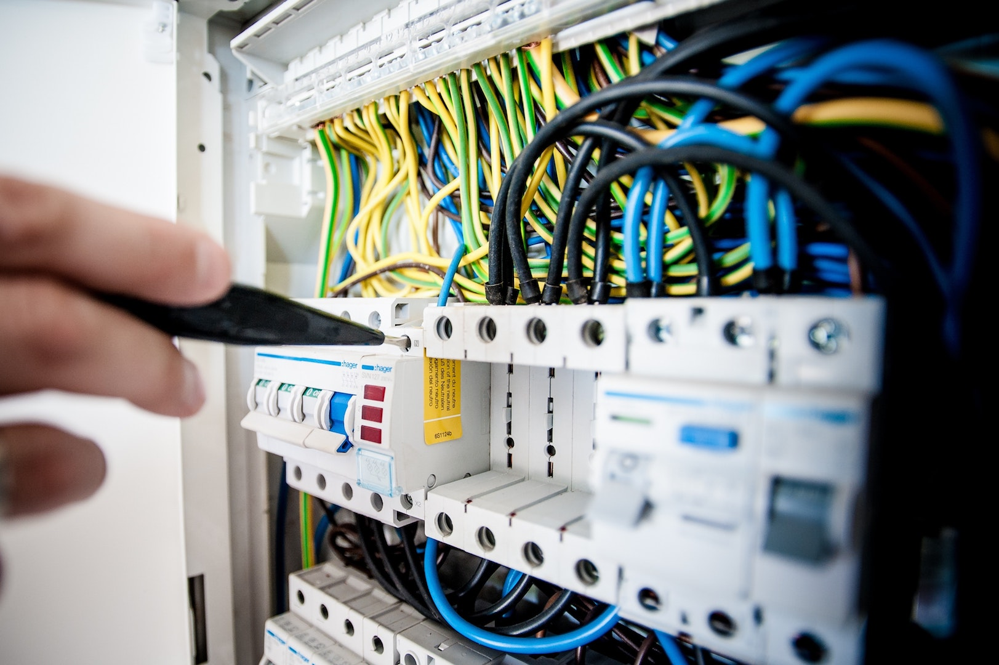

Delivered end-to-end network deployments for home and business spaces, including AP rollout, switch uplinks, cabinet integration, and cleaner on-site operations.
Infrastructure / Network Deployment / Reliability
Designing the infrastructure and network foundations teams depend on.
I work across platform operations, enterprise networking, and delivery automation to keep environments stable, observable, and ready to grow.
- Focus
- Cloud platforms, Linux, enterprise networks, observability
- Approach
- Durable architecture, clean deployment, measurable operations
About
Engineering the infrastructure layer people notice only when it fails.
My work spans infrastructure planning, residential and enterprise network deployment, Linux operations, delivery pipelines, and monitoring. The objective is consistent every time: make environments easier to run, easier to troubleshoot, and easier to scale.
Reliable platforms and well-built networks should feel quiet, predictable, and ready.
Expertise
Three areas where I usually create the most operational leverage.
01
Residential and enterprise network deployment
I design and deploy wired and wireless environments for homes, offices, and business spaces, covering switching, access point placement, gateway integration, structured cabling, and operational handoff.

02
Platform operations and observability
I standardize environments, monitor service health, and expose the right signals so incidents can be detected and diagnosed before they spread.
03
Automation and delivery workflows
I connect developers and operators through automation that reduces repeat work, keeps delivery consistent, and shortens the path to production.
Selected Practice
Execution shaped around reliability, deployment quality, and operational clarity.
These themes show up repeatedly across the environments and networks I help build.
See the full technical profileBuilt and operated Linux-based infrastructure that balances practical service delivery with maintainable architecture and clearer ownership boundaries.
Aggregating logs and metrics with Elasticsearch, Logstash, Filebeat, Redis, Kafka, Grafana, and Kibana to shorten investigation time.
Improved deployment consistency with playbooks, build pipelines, and standardized provisioning so environment setup becomes faster and less error-prone.
Contact